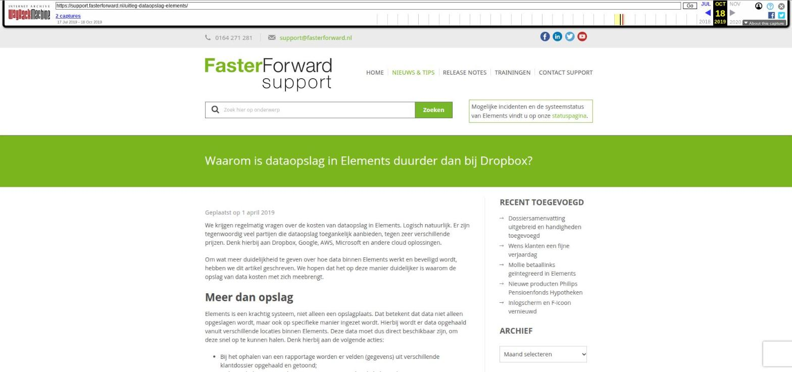

Waarom is dataopslag in Elements duurder dan bij Dropbox?

Tekstinhoud
Geplaatst op 1 april 2019
We krijgen regelmatig vragen over de kosten van dataopslag in Elements. Logisch natuurlijk. Er zijn tegenwoordig veel partijen die dataopslag toegankelijk aanbieden, tegen zeer verschillende prijzen. Denk hierbij aan Dropbox, Google, AWS, Microsoft en andere cloud oplossingen.
Om wat meer duidelijkheid te geven over hoe data binnen Elements werkt en beveiligd wordt, hebben we dit artikel geschreven. We hopen dat het op deze manier duidelijker is waarom de opslag van data kosten met zich meebrengt.
Meer dan opslag
Elements is een krachtig systeem, niet alleen een opslagplaats. Dat betekent dat data niet alleen opgeslagen wordt, maar ook op specifieke manier ingezet wordt. Hierbij wordt er data opgehaald vanuit verschillende locaties binnen Elements. Deze data moet dus direct beschikbaar zijn, om deze snel op te kunnen halen. Denk hierbij aan de volgende acties:
Bij het ophalen van een rapportage worden er velden (gegevens) uit verschillende klantdossier opgehaald en getoond;
Bij het ophalen van een dossiersamenvatting worden de belangrijkste gegevens uit een klantdossier opgehaald en gepresenteerd in een samenvatting;
Bij het gebruiken van tags zoekt Elements automatisch naar de bijbehorende gegevens binnen het klantdossier. Bij een mailcampagne met meerdere tags kunnen dit duizenden velden in één keer zijn.
Workflows reageren automatisch op data binnen Elements en maken herinneringen, taken en e-mails aan. Wanneer bijvoorbeeld het aantal producten toeneemt, moeten workflows ook meer acties uitvoeren.
Voorbeelden van acties en signalen op basis van data
Verschil met Dropbox
Dit is een groot verschil met oplossingen zoals Dropbox. In Dropbox worden gegevens puur opgeslagen als data. Wellicht binnen een bepaalde mappenstructuur, maar verder zonder complexiteit.
Waar wordt mijn data opgeslagen?
Zoals voor veel van u waarschijnlijk bekend, wordt de data (storage) opgeslagen bij onze hostingleverancier Solvinity. De storage die Faster Forward bij Solvinity afneemt is niet te vergelijken met storage bij partijen als Dropbox, Google, AWS of Microsoft.
Storage is namelijk slechts een klein onderdeel van de dienstverlening die Faster Forward biedt. Elements richt zich meer op de efficiëntie van de verzamelde gegevens en het hierop makkelijk kunnen acteren. Zo zijn er tal van applicaties en onderliggende systemen die nodig zijn om een hoog niveau van dienstverlening te garanderen. In samenwerking met Solvinity zorgt Faster Forward dat dit totaalpakket van IT-systemen goed werkt, heel goed beveiligd is en in hoge mate beschikbaar is.
Voordelen t.o.v. internationale clouddiensten
Wanneer we puur naar opslag van data kijken, dan zijn er nog een aantal voordelen ten opzichte van opslag bij voorheen genoemde clouddiensten.
Data blijft in Nederland
De AVG wetgeving stelt dat voor data uitwisseling buiten de EER aparte regels gelden. Lees ook dit artikel.
Datacentra van bijvoorbeeld Dropbox staan in de Verenigde Staten.
Back-up en recovery is inbegrepen
Bij eerder genoemde partijen is dit vaak niet het geval en zijn er aan het terugzetten van een back-up of het herstellen van data extra kosten verbonden.
SOC-2 compliancy is bij Solvinity inbegrepen
24/7 support door Solvinity
Ook wanneer er bijvoorbeeld ’s avonds of in het weekend een storing is, zorgt Solvinity dat dit zo snel mogelijk opgelost wordt.
Het Equinix Data Center in Amsterdam waar Solvinity zijn data opslaat
Garantie voor veiligheid
Daarnaast is de IT-dienstverlening ISO27001 en ISO9001 gecertificeerd en voldoet het aan de SOC2 richtlijnen. Dit is onder andere nodig om te garanderen dat Faster Forward voldoet aan de eisen van De Nederlandse Bank. Met hulp van Solvinity wordt deze zekerheid niet alleen nu, maar ook in de toekomst gegarandeerd.
Continue ondersteuning
Eén van de grote voordelen van de samenwerking met een lokale IT-dienstverlener, is de support die wordt gegeven op de gehele IT-omgeving. Dit in tegenstelling tot de eerder genoemde partijen, waarbij storage weliswaar goedkoper is, maar zonder support wordt aangeboden en geen onderdeel is van het pakket.
Categorie: Algemeen